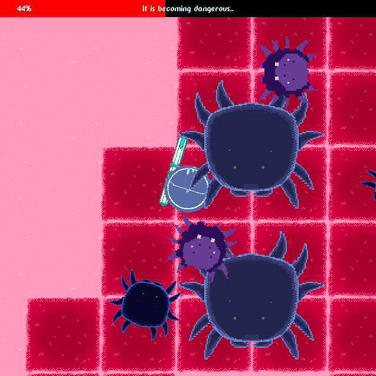

Nikolay's Games
Below, you will find some of the games that I have worked on during my free time and a few others created during my studies. Aside from that, I have also worked on games at &ranj where I interned for five months but they will not be displayed publicly. The source code for all games can be found on my Github .
This portfolio is strictly for game development. Web development or other projects that I have done can only be found on my Github or by asking me personally. Games I have worked on were made using Unity3D, Phaser v2/3, CreateJS, Love2D and Twine. The page of each game discusses some development aspects of it and talks about the choices I made, or didn't. If you want to try each game, there's a link at the top of each game's page.
Booblazor
Uploaded on 11th September, 2020. Read time: 14m
Game Page: https://back-body-hurts.itch.io/booblazor
BoobLazor was created for the 42 hour 2020 boob jam meant to support the prevention of breast cancer. You play as a robot injected into the breast of a patient with the goal of destroying the cancer cells using a lazer gun before they replicate and manifest it. The game was further developped completed after the initial 42 hours since I wanted to create the game in Love2D, with which I had no prior experience and I was learning in the go. Because of this, much of the code is experimentation or improvisation due to time limitations. I worked on the project even after the game jam in order to thoroughly complete the game from start to finish. Since Love2D doesn't have a lot of the nice things game engines like Unity3D do, I spent more time programming and testing them (drawing menus that scale, collisions, camera/world offset, animations and so on). I'll focus on the topic of gameplay, since drawing UI and dialogue isn't as much fun. In order to generate the world and store all the objects' information in it, I used one global world object. This world object is really useful for making all sorts of functionality like testing collision, detection of nearby entities, boundaries and so on:
world.map = {}
world.mapWidth = 32 -- width of map in tiles
world.mapHeight = 32 -- height of map in tiles
world.tileSizeX = 128 -- Manually calculated, 8x8 tiles on screen
world.tileSizeY = 128 -- Manually calculated, 8x8 tiles on screen
-- List of all the entities in the world
world.entities = {}
world.spawners = {}
-- Setting the number of rows in the map table
for x = 1, world.mapWidth do
world.map[x] = {}
end
-- Setting the default map tile
for x = 1, world.mapWidth do
for y = 1, world.mapHeight do
-- 0 = safe
-- 1 = corrupted
-- 2 = transitioning
local tile = Tile(x, y, "safe")
tile.worldX = x * world.tileSizeX
tile.worldY = y * world.tileSizeY
world.map[x][y] = tile
end
end
Then, when we have all the tiles on the map, we have to generate all the evil cancer cell spawners that are responsible for creating new cancer cells for the player to fight. They spawn on the first corrupted cells on the map and the job of cancer cells is to corrupt safe cells and replicate to increase the speed of the corruption process:
-- This makes sure the spawners dont spawn
-- on the edge of the screen.
local paddingTiles = 1
for x = 1, world.mapWidth do
for y = 1, world.mapHeight do
if x < world.mapWidth - paddingTiles and
y < world.mapHeight - paddingTiles then
local choice = lume.weightedchoice({
["corrupted"] = 3,
["safe"] = 97
})
if choice == "corrupted" then
local tile = Tile(x, y, "safe")
world.map[x][y] = tile
local spawner = Spawner(#world.spawners + 1, x, y)
spawner.worldX = x * world.tileSizeX
spawner.worldY = y * world.tileSizeY
table.insert(world.spawners, spawner)
end
end
end
end
Finally, each tile on the map is dynamic, meaning that depending on the entity sitting on top of it or not, the tile will change. Every second, all the tiles on the map tick in order to slowly decay the corruption as if the human's system is fighting the cancer. Tiles which cancer cells haven't reached will be clean while the rest are corrupted:

function Tile:new(x, y, type)
self.x = x or 0
self.y = y or 0
self.worldX = 0
self.worldY = 0
self.type = type
self.totalCorruptionDecayDelay = math.random(20) + 30
self.currentCorruptionDecay = self.totalCorruptionDecayDelay
end
function Tile:tickCorruption()
if self.type == "corrupted" then
if self.currentCorruptionDecay <= 0 then
self.type = "safe"
self.currentCorruptionDecay = self.totalCorruptionDecayDelay - 1
elseif self.currentCorruptionDecay > 0 then
self.currentCorruptionDecay = self.currentCorruptionDecay - 1
end
end
end
Obviously, this decay is really slow and won't help much otherwise the player won't really have a challenge in the game. That's all there is to the world generation. We stuck to a simpler game for this game jam since we were not sure if 42 hours were good enough for anything more complex. All entities on the map inherit from the Entity object/class which contains all the base characteristics for each entity and each entity has its own class which extends or defines new characteristics:
-- Role is the type of entity it is (Player, Cancer cell)
function Entity:new(x, y, role)
self.x = x or 0
self.y = y or 0
self.worldX = 0 -- Used for getting a more accurate position on the world
self.worldY = 0 -- ^ useful for collisions and such
self.role = role
self.hitpoints = 10
self.movementSpeed = 1000
self.speedMultiplier = 0.01
end
All entities on the game take damage when hit, so they share the same method, but each entity has some modifications to it for screen shake or playing a "hurt" sound or for adding a hit shield delay so that you don't take damage thousands of times at a time:
function Player:takeDamage(damage)
if self.currentTakeDamageRate <= 0 then
Player.super.takeDamage(self, damage)
screen:setShake(20)
hitPlayer:play();
self.currentTakeDamageRate = self.takeDamageRate
end
end
Since we only had 42 hours and I had little experience with Lua and Love2D, I resorted to using some third-party libraries for screen shake, dialogue, classes, switching between scenes and so on. Whenever an entity is killed, it creates a "death animation" object of itself on the same position it died and it plays that animation, then destroys it when its finished. That was kind of the easiest way I thought of having death animations show up. Otherwise the entity code would have become huge and separating them made it easier for me to manage:
function DeathAnimation:new(id, worldX, worldY)
self.id = id
self.worldX = worldX or 0
self.worldY = worldY or 0
self.currentSprite = bloodFrames[1]
self.currentSpriteIndex = 1
self.atlas = enemyBloodAnimationAtlas
self.fps = 0.05
self.currentFps = self.fps
self.scheduleToKill = false
end
Compared to some game engines that use an interface and its own filesystem, Love2D needs you to manually load all graphics, quads and audio files when the game starts. This makes organization of your files really important because if you're not vigilant, you or other people working on the game can get lost in search of specific files. The way you load files is in objects with all related sprites inside, so that you can access each sprite by key names, or if its an animation sprite sheet then you load all the quads in one array:
spawnerSprites = {}
spawnerSprites[1] = love.graphics.newQuad(0, 0, 256, 256, enemyBig2Atlas:getDimensions())
spawnerSprites[2] = love.graphics.newQuad(257, 0, 256, 256, enemyBig2Atlas:getDimensions())
That's mostly what the gameplay is about, collisions or boundary checks aren't as interesting to discuss so I'm skipping those parts, but if you want to see all the code, look it up on my GitHub!
... project created by
Nikolay Ivanov
Programmer for the whole project and also helped design it.
Roger Recaldini
Responsible for all of the visual assets of the game and also worked on the design.